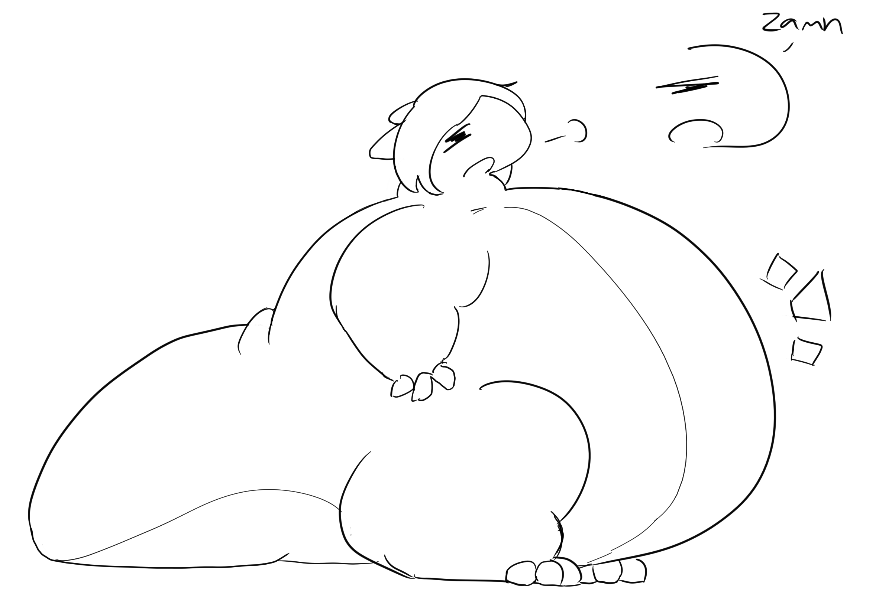
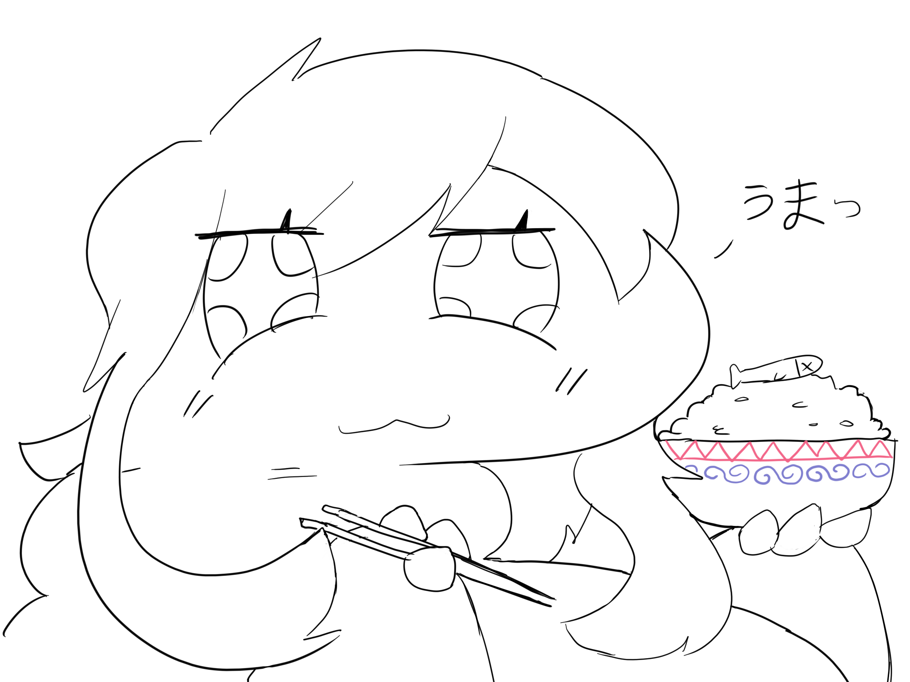
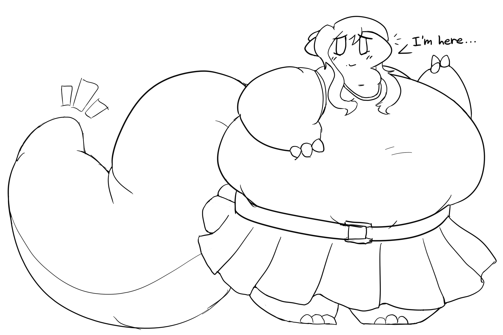
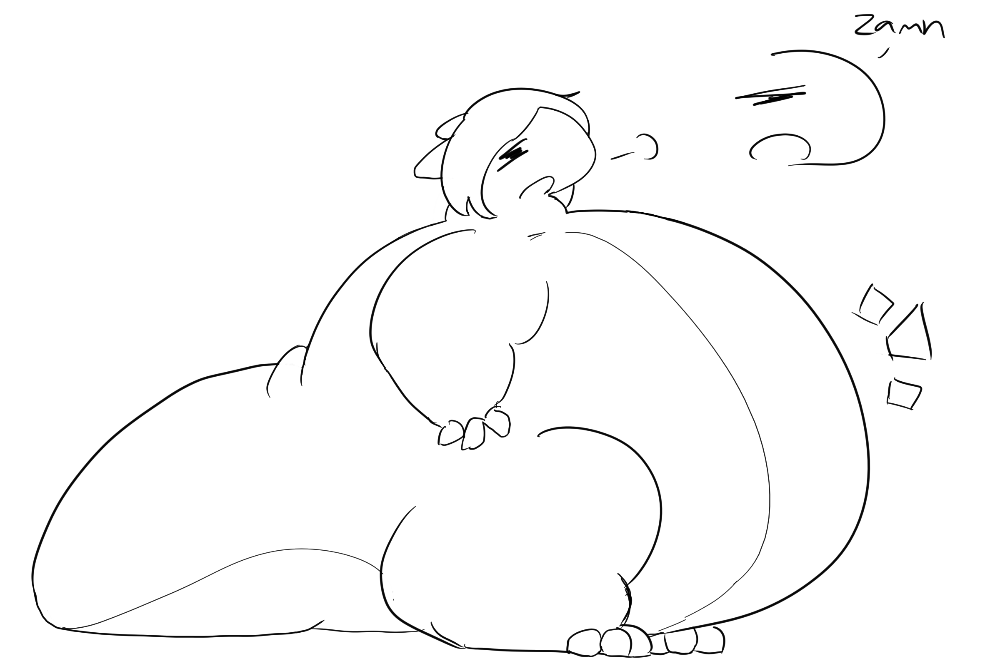
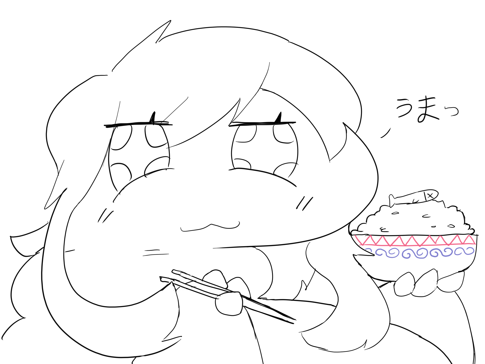
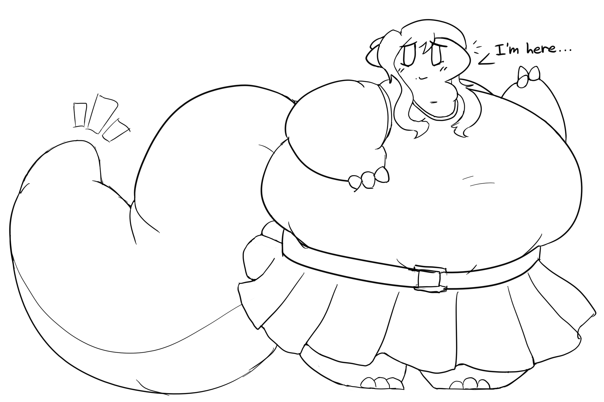
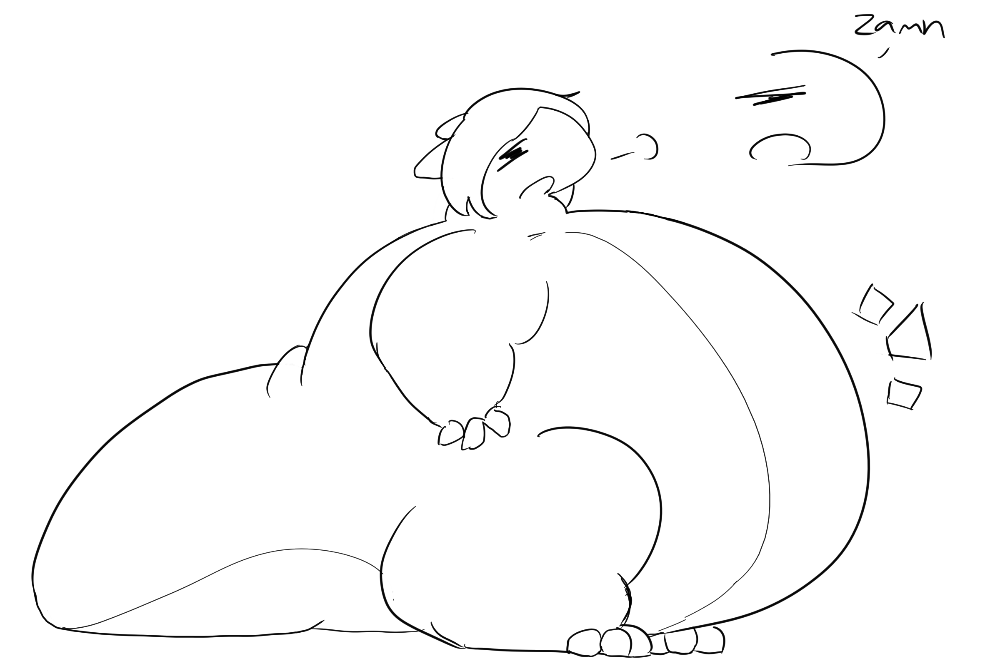
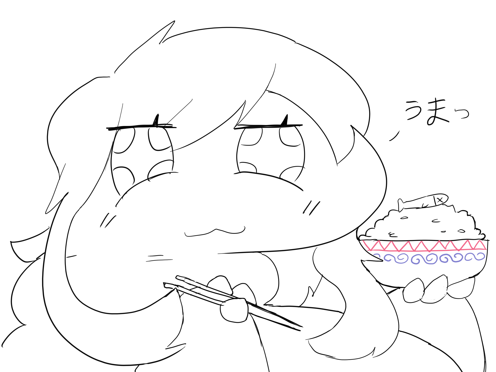
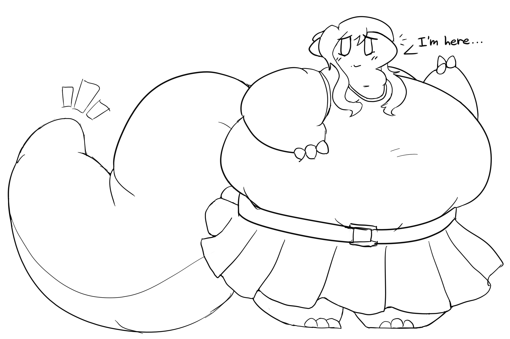

This is my comically fat dragon character named Futodoshi (フトドシ). Her design is sort of fluid. She runs a small restaurant with her crew, and is often strained to make ends meet.
I took inspiration from this artist. I like their style a lot.


